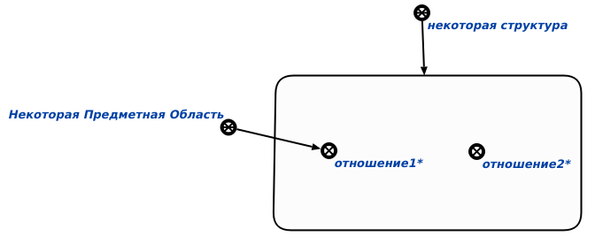
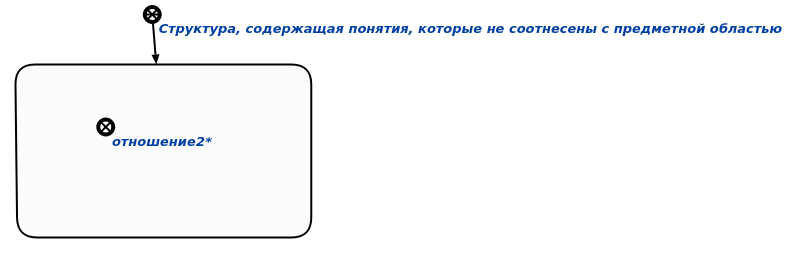

Команда проверки понятий, которые не соотнесены с предметной областью предназначена для нахождения понятий, которые не соотнесены с предметной областью. Единственным аргументом запроса является структура. в которой необходимо проверить понятия.

Рис 1. Входной аргумент

Рис 2. Результат выполнения команды